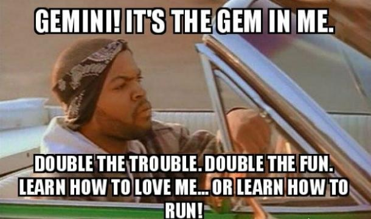

Symbol:The Twins
Element:Air
Quality:Mutable
Keyword:"I Think"
Ruling Planet:Mercury
Strengths:Adaptable, Gentle, Able to absorb new ideas quickly
Weakness:Inconsistent, indecisive, flighty.
Excellently expressive and agile minded, Geminis usually represent two different personalities: One that you always see and the one which you
never know. They are sociable, communicative with a tendency to suddenly get serious and restless. They are fascinated with the world itself,
extremely curious, with a constant feeling that there is not enough time to experience everything they want to see.

Gemini is an element of Air and this connects it to all aspects of the mind. It is ruled by Mercury, the planet that represents communication,
writing, and movement. People born under this Sun sign often have a feeling that their other half is missing, so they are forever seeking new
friends, mentors, colleagues and people to talk to in the quest to discover their other side.
Gemini's changeable and open mind makes them excellent artists, especially writers and journalists. They are curious and inquisitive people
born with the intense feeling of discovering every adventure, everything the world has to offer and hence they never tend to be boring.
Geminis value intellect more than anything. They get turned on by mental stimulation. Even though they tend to be emotional at times, they cannot
stand emotions expressed by other people. They simply don’t know how to console a crying friend even though they feel sympathy for the person.
The Gemini zodiac sign can be so logical sometimes that others start to see them as being too stiff in their ways. They can't help this.
It's simply how they're wired. It's not that Geminis aren't social. They're only doing things their own way.
Individualism is their thing.